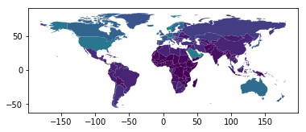
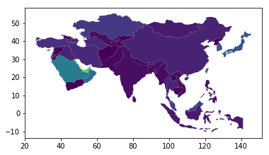
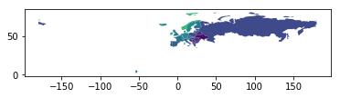
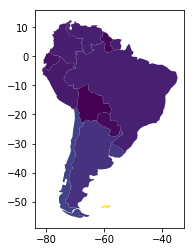
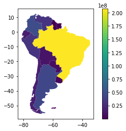
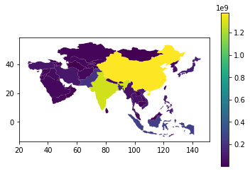
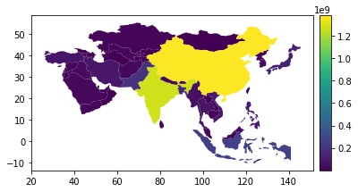
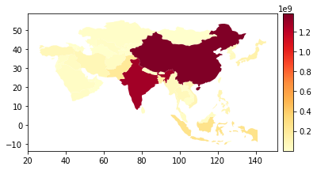

Chloropleth Maps
import geopandasworld = geopandas.read_file(geopandas.datasets.get_path("naturalearth_lowres"))world.head()| pop_est | continent | name | iso_a3 | gdp_md_est | geometry | |
|---|---|---|---|---|---|---|
| 0 | 920938 | Oceania | Fiji | FJI | 8374.0 | (POLYGON ((180 -16.06713266364245, 180 -16.555... |
| 1 | 53950935 | Africa | Tanzania | TZA | 150600.0 | POLYGON ((33.90371119710453 -0.950000000000000... |
| 2 | 603253 | Africa | W. Sahara | ESH | 906.5 | POLYGON ((-8.665589565454809 27.65642588959236... |
| 3 | 35623680 | North America | Canada | CAN | 1674000.0 | (POLYGON ((-122.84 49.00000000000011, -122.974... |
| 4 | 326625791 | North America | United States of America | USA | 18560000.0 | (POLYGON ((-122.84 49.00000000000011, -120 49.... |
world = world[(world.pop_est > 0) & (world.continent != 'Antarctica')]world['gdp_per_cap'] = world.gdp_md_est / world.pop_estworld.plot(column='gdp_per_cap')<matplotlib.axes._subplots.AxesSubplot at 0x126780ac8>

world.continent.unique()array(['Oceania', 'Africa', 'North America', 'Asia', 'South America',
'Europe', 'Seven seas (open ocean)'], dtype=object)
# Show only Asiaasia = world[world.continent == 'Asia']asia['gdp_per_cap'] = asia.gdp_md_est / asia.pop_est/Users/rajacsp/anaconda3/envs/py36/lib/python3.6/site-packages/ipykernel_launcher.py:1: SettingWithCopyWarning:
A value is trying to be set on a copy of a slice from a DataFrame.
Try using .loc[row_indexer,col_indexer] = value instead
See the caveats in the documentation: http://pandas.pydata.org/pandas-docs/stable/indexing.html#indexing-view-versus-copy
"""Entry point for launching an IPython kernel.
asia.plot(column='gdp_per_cap')<matplotlib.axes._subplots.AxesSubplot at 0x1268cf668>

# Show only Europeeu = world[world.continent == 'Europe']
eu['gdp_per_cap'] = eu.gdp_md_est / eu.pop_est
eu.plot(column='gdp_per_cap')/Users/rajacsp/anaconda3/envs/py36/lib/python3.6/site-packages/ipykernel_launcher.py:2: SettingWithCopyWarning:
A value is trying to be set on a copy of a slice from a DataFrame.
Try using .loc[row_indexer,col_indexer] = value instead
See the caveats in the documentation: http://pandas.pydata.org/pandas-docs/stable/indexing.html#indexing-view-versus-copy
<matplotlib.axes._subplots.AxesSubplot at 0x126a12ef0>

# South America
sa = world[world.continent == 'South America']
sa['gdp_per_cap'] = sa.gdp_md_est / sa.pop_est
sa.plot(column='gdp_per_cap')/Users/rajacsp/anaconda3/envs/py36/lib/python3.6/site-packages/ipykernel_launcher.py:4: SettingWithCopyWarning:
A value is trying to be set on a copy of a slice from a DataFrame.
Try using .loc[row_indexer,col_indexer] = value instead
See the caveats in the documentation: http://pandas.pydata.org/pandas-docs/stable/indexing.html#indexing-view-versus-copy
after removing the cwd from sys.path.
<matplotlib.axes._subplots.AxesSubplot at 0x126bc0470>

# With Legendimport matplotlib.pyplot as pltfig, ax = plt.subplots(1, 1)
sa = world[world.continent == 'South America']
sa['gdp_per_cap'] = sa.gdp_md_est / sa.pop_est
sa.plot(column = 'pop_est', ax=ax, legend=True)/Users/rajacsp/anaconda3/envs/py36/lib/python3.6/site-packages/ipykernel_launcher.py:4: SettingWithCopyWarning:
A value is trying to be set on a copy of a slice from a DataFrame.
Try using .loc[row_indexer,col_indexer] = value instead
See the caveats in the documentation: http://pandas.pydata.org/pandas-docs/stable/indexing.html#indexing-view-versus-copy
after removing the cwd from sys.path.
<matplotlib.axes._subplots.AxesSubplot at 0x126b8c588>

fig, ax = plt.subplots(1, 1)
asia = world[world.continent == 'Asia']
asia['gdp_per_cap'] = asia.gdp_md_est / asia.pop_est
asia.plot(column = 'pop_est', ax=ax, legend=True)/Users/rajacsp/anaconda3/envs/py36/lib/python3.6/site-packages/ipykernel_launcher.py:4: SettingWithCopyWarning:
A value is trying to be set on a copy of a slice from a DataFrame.
Try using .loc[row_indexer,col_indexer] = value instead
See the caveats in the documentation: http://pandas.pydata.org/pandas-docs/stable/indexing.html#indexing-view-versus-copy
after removing the cwd from sys.path.
<matplotlib.axes._subplots.AxesSubplot at 0x127002ef0>

fig, ax = plt.subplots(1, 1)
asia = world[world['continent'] == 'Asia']
asia['gdp_per_cap'] = asia['gdp_md_est'] / asia['pop_est']
from mpl_toolkits.axes_grid1 import make_axes_locatable
divider = make_axes_locatable(ax)
cax = divider.append_axes("right", size="4%", pad=0.1)
asia.plot(column = 'pop_est', ax=ax, legend=True, cax=cax)/Users/rajacsp/anaconda3/envs/py36/lib/python3.6/site-packages/ipykernel_launcher.py:4: SettingWithCopyWarning:
A value is trying to be set on a copy of a slice from a DataFrame.
Try using .loc[row_indexer,col_indexer] = value instead
See the caveats in the documentation: http://pandas.pydata.org/pandas-docs/stable/indexing.html#indexing-view-versus-copy
after removing the cwd from sys.path.
<matplotlib.axes._subplots.AxesSubplot at 0x127e412e8>

fig, ax = plt.subplots(1, 1)
asia = world[world['continent'] == 'Asia']
asia['gdp_per_cap'] = asia['gdp_md_est'] / asia['pop_est']
from mpl_toolkits.axes_grid1 import make_axes_locatable
divider = make_axes_locatable(ax)
cax = divider.append_axes("right", size="4%", pad=0.1)
asia.plot(column = 'pop_est', ax=ax, legend=True, cax=cax, cmap='YlOrRd')/Users/rajacsp/anaconda3/envs/py36/lib/python3.6/site-packages/ipykernel_launcher.py:4: SettingWithCopyWarning:
A value is trying to be set on a copy of a slice from a DataFrame.
Try using .loc[row_indexer,col_indexer] = value instead
See the caveats in the documentation: http://pandas.pydata.org/pandas-docs/stable/indexing.html#indexing-view-versus-copy
after removing the cwd from sys.path.
<matplotlib.axes._subplots.AxesSubplot at 0x1282e8f98>
